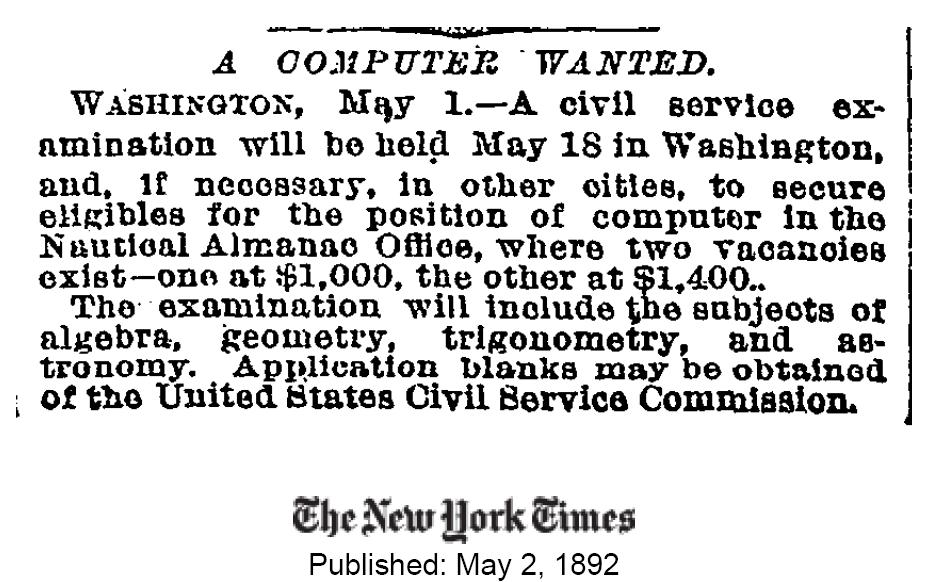

¿Es la nube el nuevo computador?
¿Qué nos permite hacer la nube que no podíamos hacer antes?
Nicholas Carr se pregunta si no estaremos perdiendo algo en este debate sobre el negocio del cloud computing, y el ejemplo que pone es muy bueno:
A fines del 2007, el New York Times tenía el siguiente desafío, querían dejar disponible en la red su archivo completo de artículos, 11 millones en total, desde 1851 hasta 1992. Ya habían digitalizado todos los artículos, produciendo un total de 4 terabytes en imágenes, en formato TIFF. Pero este no es un formato adecuado para publicar en linea, además que algunos artículos podían estar compuesto por muchos archivos TIFF. El periódico necesitaba convertir la pila de imágenes TIFF a formato PDF, más apto para la web.
Esta no es una tarea particularmente complicada, pero requiere de una gran cantidad de tiempo de procesamiento.
Afortunadamente un programador en el Times, Derek Gotfrid, había estado jugando con los servicios web de Amazon, y se había dado cuenta de que el nuevo utilitario de computación, Elastic Compute Cloud (EC2), podría ofrecer una solución. Trabajando solo, subió los cuatro terabytes de datos TIFF data en servicio de almacenamento de Amazon Simple Storage Service (S3), y construyó código para el EC2, de modo que, tal como describe en unanota en su blog, “tome todas las partes que componen un artículo desde S3, genere el PDF y lo almacene de vuelta en S3”. Entonces arrendó 100 computadores virtuales a través de EC2 y procesó la data en ellos. En menos de 24 horas, el tenía 11.000.000 PDFs, todos almacenados en S3 y listos para ser servidos en el sitio del New York Times.
¿El costo total de computación? De acuerdo a Gottfrid la factura total de EC2 ascendió a 240 Dolares. (10 centa vos por hora de cómputo, por 24 horas; no hubo cargos por ancho de banda dado que la transferencia de data tuvo lugar dentro del sistema de Amazon, desde el S3 al EC2 ida y vuelta).
Probablemente, si no fuera por la nube, el New York Times habría abandonado el proyecto.
Y ahí está, ahora es posible consultar el archivo del New York Times desde 1851, aunque no todos los artículos son gratuitos, pero no deja de ser impresionante, como este aviso de mayo de 1892 solicitando un computador.

Por acá está la respuesta al comentario de Patricio, el verdadero negocio del cloud computing no está en la nube, sino que en lo que se puede hacer con la nube.